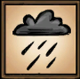
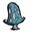
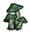
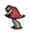
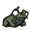

| Rain | |
|  |
|
| Sanity Loss | Up to -3.3/min |
| Effects | Regrows  |
| Spawns | Rarely spawns  |
A lightning bolt setting fire to wood wall segments
The character's  will slowly decrease by up to 3.3 points (depending on precipitation rate) every minute when it is raining. This can be avoided by equipping an Umbrella. Rain also reduces the efficiency of Torches, Campfires, and Fire Pits, causing them to burn out more quickly. WX-78 will take damage from rain.
will slowly decrease by up to 3.3 points (depending on precipitation rate) every minute when it is raining. This can be avoided by equipping an Umbrella. Rain also reduces the efficiency of Torches, Campfires, and Fire Pits, causing them to burn out more quickly. WX-78 will take damage from rain.
If the rain is especially strong, lightning strikes may occur. Lightning will not strike a player directly (unless playing as WX-78); however, it may strike any nearby object that can catch fire, such as Trees, Saplings, burnable structures, or even creatures. If structures or plants are too close together, such as in a Berry farm, lightning can quickly cause a devastating fire. Effects caused by lightning can easily be avoided by crafting a Lightning Rod.
In rain, fuel burns faster (depending on precipitation rate):
In rain, Farm crops grow up to 300% faster (depending on precipitation rate). Additionally, Mushrooms that have already been picked will only regrow after it rains.
During Winter, rain is often replaced by snow. It will cover all surfaces with a layer of snow, and make it harder to see when it is falling. Snow will all melt away when it turns to Summer, or if it rains during the Winter.
Setting rain to lots (infinite) on world presets will also set infinite snow during winter.
Snow makes you slightly colder, and does not damage WX-78 the same way rain does.
During the "A Cold Reception" chapter in Adventure Mode Frogs will rain from the sky. This is very dangerous because frogs attack the player when they are too close. It is advised to not wander too much during this type of rain.
In the Reign of Giants DLC, rain causes wetness to rise. Also, the chance of rain will change depending on the season. Although it may seem like a minor change to the game, this new mechanic has caused the starting the game in spring to be difficult (especially while using WX-78) due to freezing and major sanity loss.
There is also a strong possibility of getting struck by lightning if there aren't any objects (trees, grass or any burnable item) or creatures in the vicinity, which will deal 10-15 damage to the player.
Frog Rain also occurs in Sandbox Mode in the Reign of Giants DLC, though only the during the Spring season. The number of Frogs spawned per rain will increase as the days go by.
| Gameplay Mechanics | |
| Activities | Cooking • Crafting • Farming • Fishing • Sleeping |
| Environment | Day-Night Cycle • Moon Cycle • Nightmare Cycle • Earthquake • Lightning • Rain |
| Seasons | Summer • Winter • ( Autumn • Spring ) |
| Mechanics | Beard • Characters • Controls • Death • Durability • Experience • Fire • Food Spoilage • Freezing ( Overheating ) • Health • Hunger • Light • Map • Naughtiness • Non-renewable resources • Sanity • Saving (Wetness) |
| Mode | Adventure Mode • Sandbox Mode • Caves • Ruins |
| Others | Pig Village • Road (Trail) • Set Piece • Things |
{kind=link}
{kind=link}
{kind=link}
{kind=link}